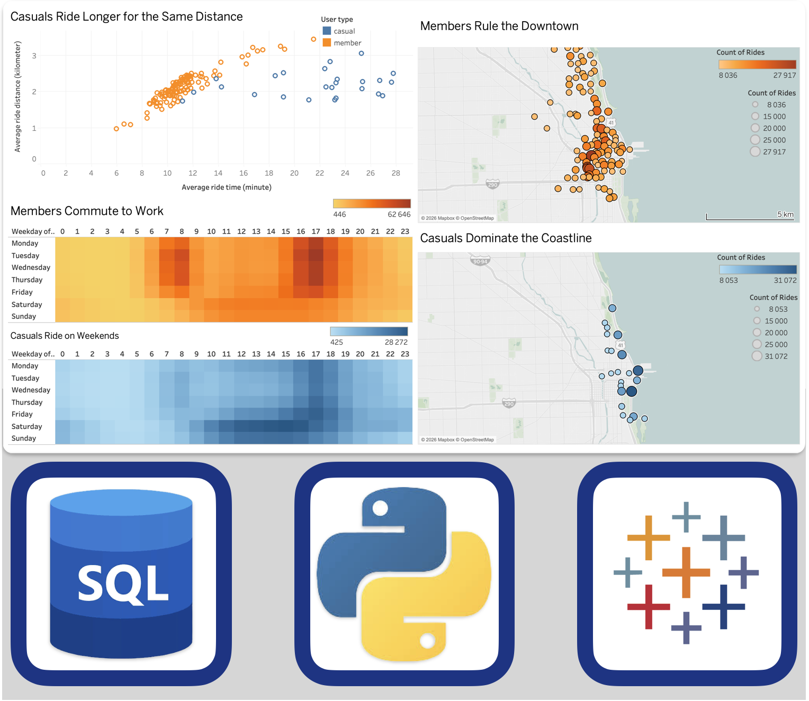
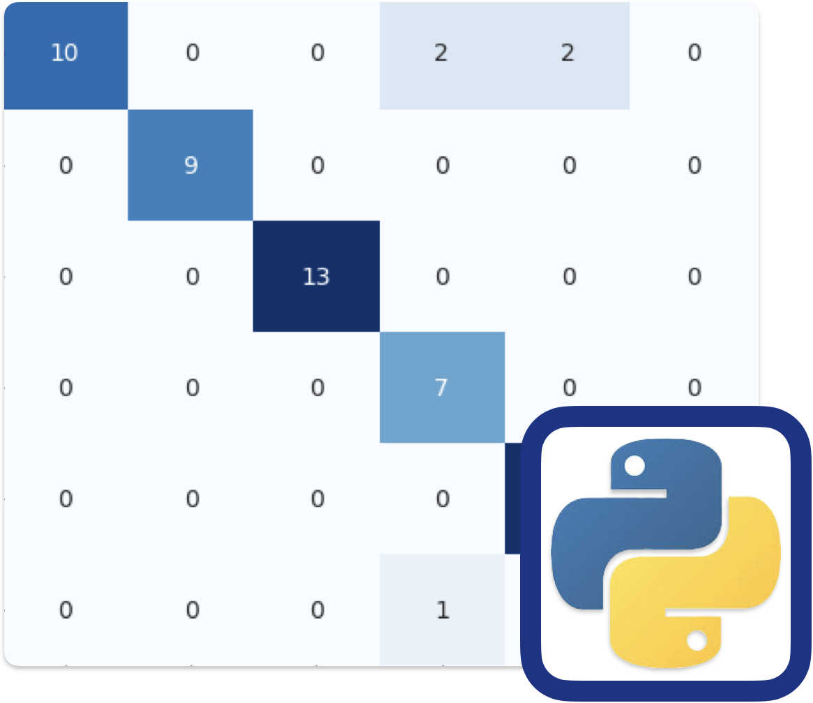

Bálint Turnai
Data Analyst portfolio
Projects
Cyclistic Bike-Share Analysis

Cleaned and analyzed a 12-month travel database using Python and SQL to uncover user habits and conversion opportunities.
GYM exercise recognition

Classifying exercises from video using classical ML and Deep Learning